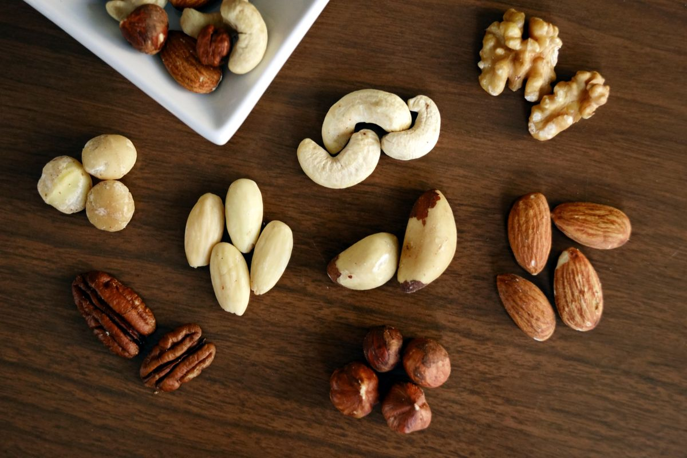

Máy làm sữa hạt
Top 5 máy làm sữa hạt theo thông số công bố + tổng hợp đánh giá khách thật
Xếp 5 model theo thông số công bố đối chiếu được, đặt cạnh ba phàn nàn lặp lại: ồn, khê/trào, vệ sinh.
Đọc bài viết →